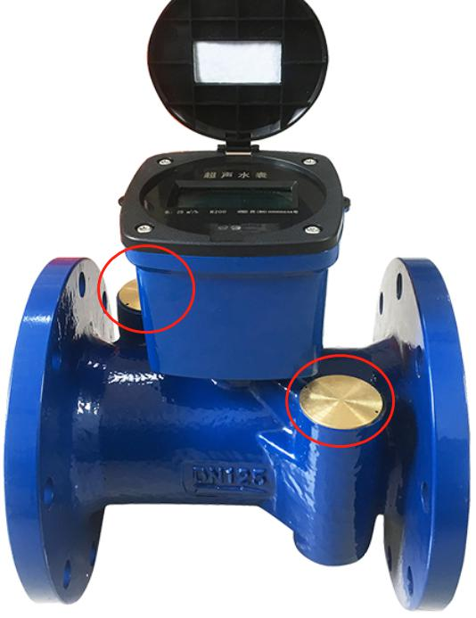
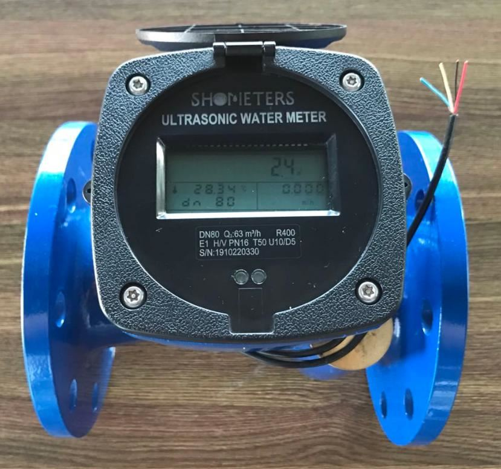

E-mail:
info@sh-meters.comCall Us:
+86 13131984716Working principle: Ultrasonic flow meter measures the liquid flow by detecting the influence of fluid flow on ultrasonic waves, which uses the "time difference method". Generally, the flow meter has 2 probes. First, the probe 1 transmits a signal, and the signal passes through the pipe wall 1, the fluid, and the pipe wall 2 is received by the probe 2 on the other side; while the probe 1 transmits the signal, the probe 2 also sends out the same signal, passing through the pipe wall 2. After the fluid and the pipe wall 1 are received by the probe 1, the two times are not equal due to the flow velocity, and there is a time difference. Therefore, the flow velocity can be obtained according to the time difference, and then the flow value can be calculated.


Work characteristics:
1. It can measure the flow of conventional pipelines, as well as the flow of difficult-to-observe and difficult-to-reach pipelines; it can measure not only the flow of conventional fluids, but also the flow of fluids with strong corrosive, radioactive, flammable and explosive characteristics Measurement. However, the ultrasonic flow meter limits the temperature range of the measured fluid. At present, the ultrasonic flow meter in our country can only be used to measure fluids below 200°C.
2. The accuracy is higher than that of mechanical water meters, which can reach R400.
3. It can measure both positive and negative directions, suitable for special circular water supply pipe network.
4. No need for external power supply, battery life can reach more than 8 years, applicable and easy to install.